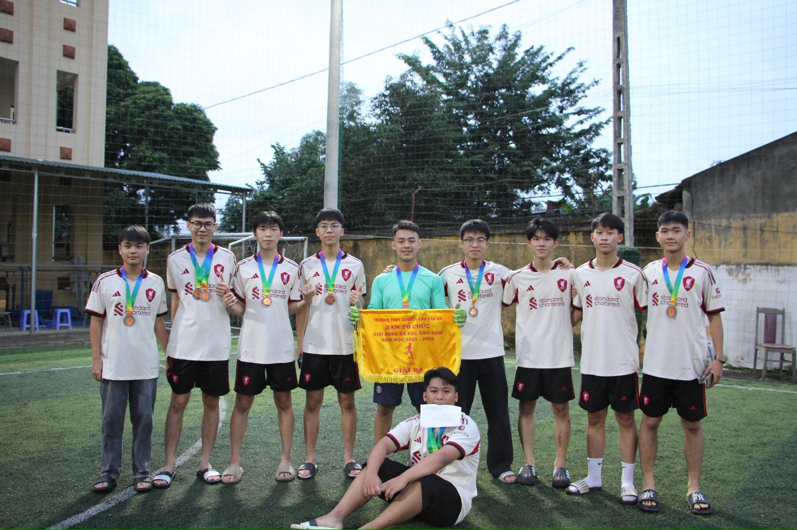
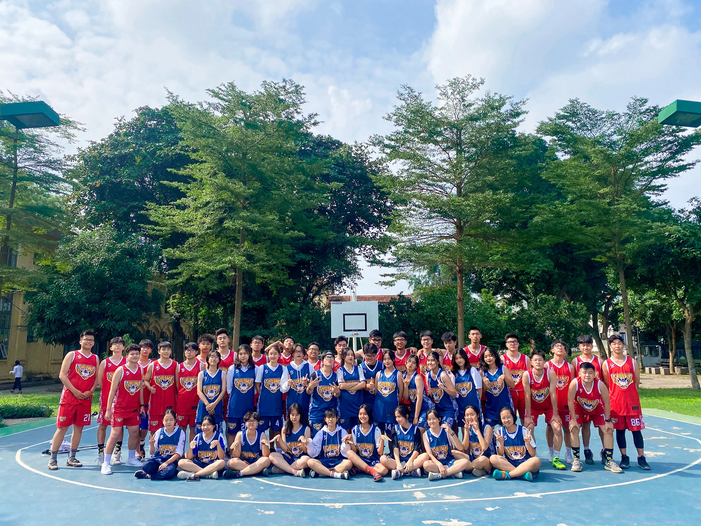
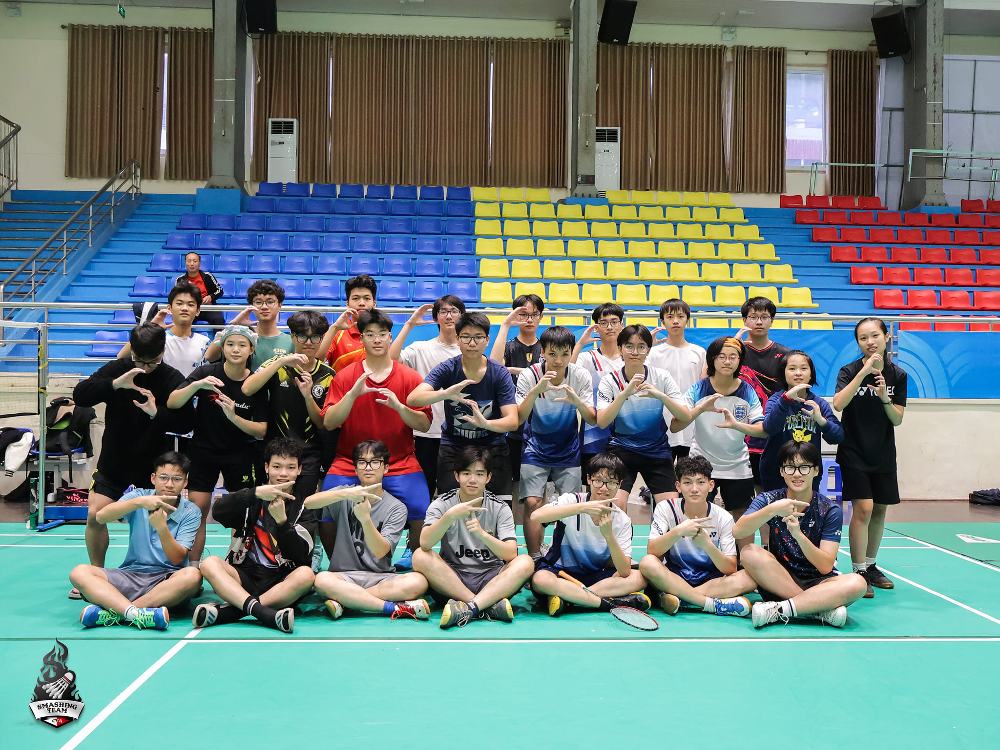
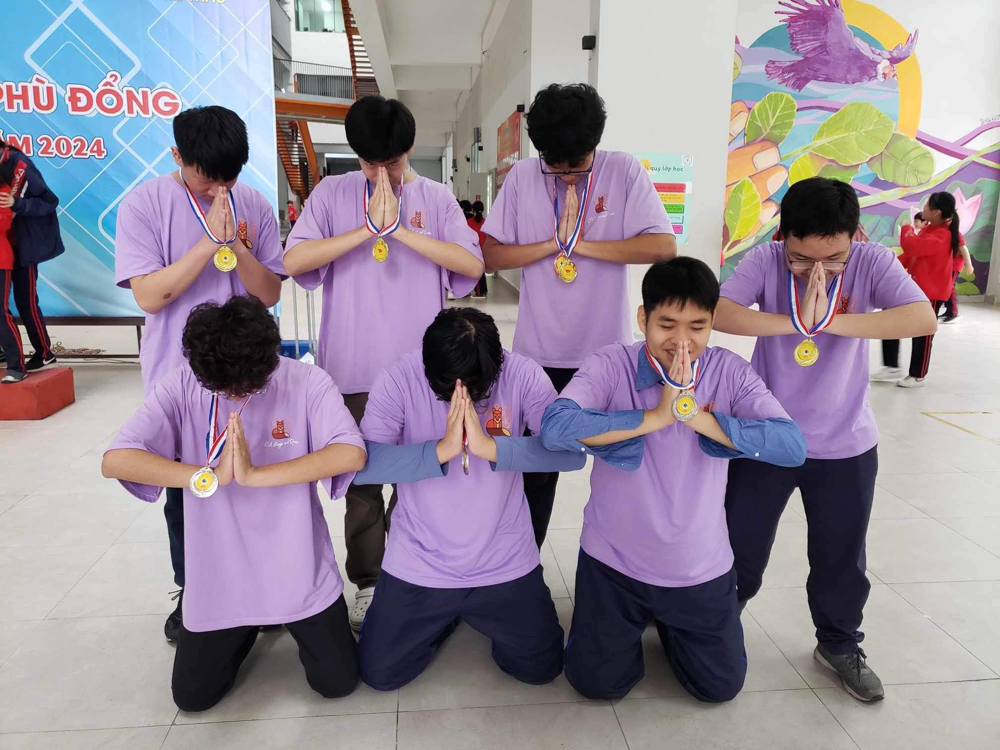

Hoạt động năng nổ và hiệu quả
Cháy hết mình trong các cuộc chơi
Giành những giải thưởng cao nhất
Chu Văn An Football ClubXin chào mọi người, chúng mình là CFC - Chu Văn An Football Club! CFC được thành lập năm 2021 với tinh thần gắn kết, rèn luyện sức khoẻ cùng những trái tim chung nhịp đập với trái bóng tròn. Nhiệm kỳ vừa qua, CFC đã kịp "cháy" hết mình với hàng loạt hoạt động sôi nổi: giao lưu bóng đá với các trường, tổ chức các giải đấu nội bộ cũng như tham gia các giải đấu lớn (Gifted Students Cup, An ninh Thủ đô, Mừng Đảng Mừng Xuân,…). Và hành trình phía trước chắc chắn sẽ còn nhiều thử thách nhưng cũng ngập tràn cơ hội để chúng mình tỏa sáng rực rỡ hơn nữa. CVA Basketball TeamXin chào tất cả mọi người, chúng mình là CVA Basketball Team - CLB bóng rổ được thành lập bởi những bạn học sinh có chung niềm đam mê với trái bóng cam tại trường THPT Chuyên Chu Văn An. Hơn 2 thập kỷ vừa qua, CVABT không chỉ là nơi để các bạn học sinh thoả niềm đam mê, thể hiện hết mình với tinh thần thể thao đầy sôi động mà còn là nơi tạo ra nhiều kỷ niệm khó quên. Khi mỗi cú ném là một niềm tự hào, mỗi đường chuyền là một lần gắn kết thì bóng rổ dường như cũng đã trở thành một phần văn hoá của trường Bưởi - Chu Văn An. Với những trận đấu vô cùng kịch tính, những mùa giải 3x3 được tổ chức hằng năm, CVABT chứng minh rằng một CLB bóng rổ không phải chỉ dành cho thành viên của đội, mà còn là nơi để tất cả mọi người cùng hô vang khẩu hiệu: “Chu Van An on 3 Family on 6”. CVA Smashing TeamXin chào mọi người, chúng mình là CVA Smashing Team (CST) – CLB Cầu lông của trường THPT Chuyên Chu Văn An! 🏸 Ra đời với tinh thần trẻ trung và năng động, CST đã trở thành nơi quy tụ những bạn học sinh có chung niềm đam mê với cầu lông. Trong nhiệm kỳ vừa qua, CLB đã tổ chức nhiều buổi giao lưu, tập luyện, những giải đấu nội bộ sôi nổi để góp phần lan tỏa tinh thần thể thao trong cộng đồng CVAers. Ngoài ra, CST đã để lại dấu ấn tại Chulympics và chắc chắn sẽ còn tiếp tục mang đến nhiều khoảnh khắc bùng nổ hơn nữa. Hành trình của CST vẫn còn rất dài phía trước – hãy cùng đồng hành và cháy hết mình cùng chúng mình nhé. CVA Kings and QueensXin chào tất cả các bạn, chúng mình là “đàn Cáo” Kings and Queens! CVA Kings and Queens là câu lạc bộ cờ vua đầu tiên và duy nhất trực thuộc trường THPT Chuyên Chu Văn An, được thành lập bởi học sinh khóa K114. Từ những ngày đầu, chúng mình đã mang sứ mệnh lan tỏa niềm đam mê với bộ môn thể thao trí tuệ này tới cộng đồng học sinh trong trường cũng như trên toàn địa bàn thành phố.Trải qua 4 mùa hoạt động đầy sôi nổi, mỗi thế hệ “nhà Cáo” đều giữ vững tinh thần nhiệt huyết, gắn kết và cởi mở, cùng nhau xây dựng một tập thể ngày càng lớn mạnh. Trên hành trình ấy, chúng mình luôn nhận được sự đồng hành và hỗ trợ tận tâm của các anh chị đi trước - những người đã truyền cảm hứng, kinh nghiệm và động lực để câu lạc bộ không ngừng phát triển, đạt được những thành tích cao trong các giải đấu như Hội Khỏe Phù Đổng quận Tây Hồ và Hội Khỏe Phù Đổng thành phố Hà Nội năm 2024 |
|